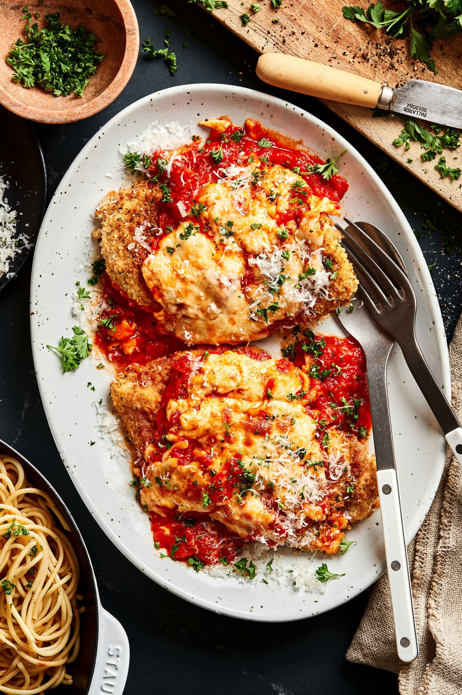

Chicken Parmesan

The dish is inspired by Melanzane alla Parmigiana (Eggplant Parmesan),
a southern Italian dish where slices of eggplant are breaded, fried, layered with tomato sauce and cheese, then baked.
When Italian immigrants came to the U.S. in the late 19th and early 20th centuries, chicken was more plentiful and affordable in America
than it was in rural Italy at the time. They swapped eggplant for chicken cutlets, keeping the breading, frying, tomato sauce, and cheese.
By the mid-20th century, Chicken Parmesan had become a staple in Italian-American eateries — often served with spaghetti or in a hero/sub sandwich,
which is something you'd never see in traditional Italy.
Ingredients
- 4 skinless, boneless Chicken-Breast halves
- 2 Large Eggs
- 1 cup Panko Bread Crumbs, or more as needed
- ¾ cup grated Parmesan Cheese
- 2 tablespoons All-Purpose Flour
- ½ cup Olive Oil for frying
- ½ cup prepared Tomato Sauce
- ¼ cup Fresh Mozzarella
- ¼ cup chopped Fresh Basil
- ½ cup grated Provolone Cheese
Preparation
Before actually cooking, you'll first prep the chicken breast by tenderizing the chicken, resulting in a thin cutlet to start with.
- Preheat an oven to 450 degrees F (230 degrees C)
- Place chicken breasts between two sheets of heavy plastic (resealable freezer bags work well) on a solid, level surface.
- pound chicken with the smooth side of a meat mallet to a thickness of 1/2-inch.
- Season chicken thoroughly with salt and pepper. Using a sifter or strainer;
- Sprinkle flour over chicken breasts, evenly coating both sides
- Beat eggs in a shallow bowl and set aside
- Mix bread crumbs and 1/2 cup Parmesan cheese in a separate bowl, set aside.
- Transfer breast to the bread crumb mixture, pressing crumbs into both sides. Repeat for each breast.
- Let chicken rest for 10 to 15 minutes.
- Heat 1/2 inch olive oil in a large skillet on medium-high heat until it begins to shimmer
- Cook chicken in the hot oil until golden, about 2 minutes per side. the chicken will finish cooking in the oven
- Transfer chicken to a baking dish & top each breast with 2 tablespoons tomato sauce.
- Layer each chicken breast with equal amounts of mozzarella cheese, fresh basil, and provolone cheese.
- Sprinkle remaining Parmesan over top and drizzle each with ½ teaspoon olive oil
- Bake in the preheated oven until cheese is browned and bubbly and chicken breasts are no longer pink in the center, 15 to 20 minutes.(the center should read at least 165 degrees F)